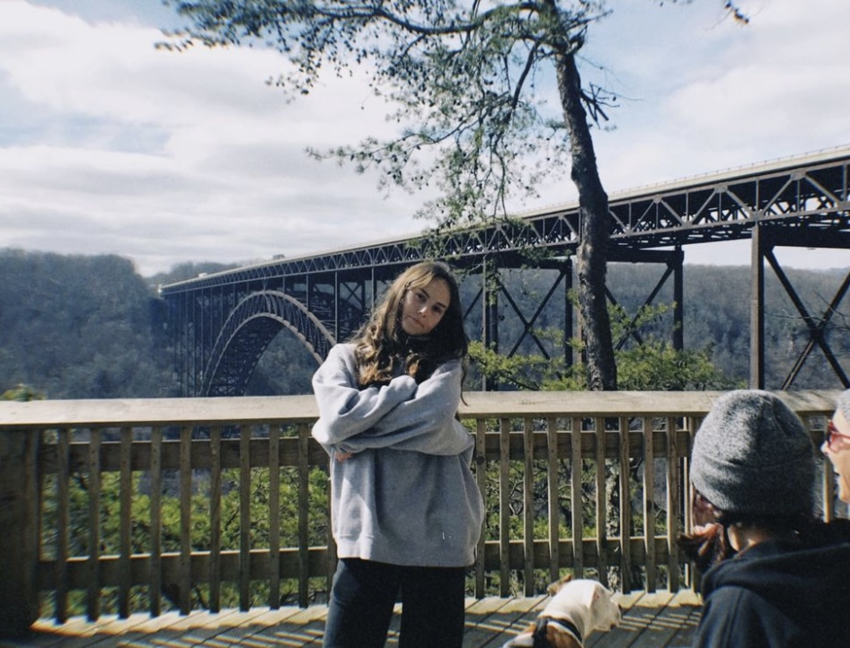

About
Casey Higgins is a third year student at Michigan State University who enjoys spending time with friends and family, going for walks (especially with her dog, Angus), cooking, and dancing. Born in South Jersey but raised in State College, Pennsylvania, she enjoys traveling with her friends and family anytime she gets the chance. Some of her favorite places to visit so far have been:
- Cape May, New Jersey
- Venice, Italy
- Munich, Germany
- Chicago, Illinois
- Venice, Austria